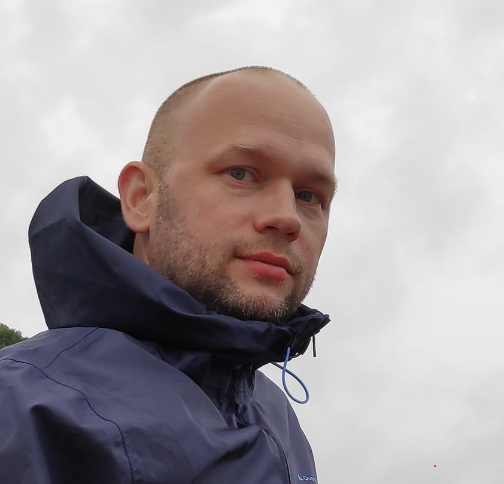

- Разработчик Ruby on Rails
- Занятость: полная занятость, стажировка
- График работы: удаленная работа, полный день
- Проживание: г. Москва
- Готов к переезду
- Обо мне
-
Меня зовут Константин, мне 40 лет и я начинающий Ruby on Rails разработчик. На данный момент у меня нет коммерческого опыта в разработке, но есть огромное желание и мотивация к развитию в данной сфере.
Хочу найти работу с интересными проектами и отзывчивой командой :)
- Образование
-
- Высшее образование. ВлГУ, Архитектурно-строительный факультет, Промышленное и гражданское строительство. Дата окончания: 2003 г.
- Высшее образование. МГТУ им. Н.Э. Баумана, ИУ-6 , Компьютерные системы и сети. Дата окончания: 2019 г.
- Навыки
-
- Ruby
- Базовые знания HTML и CSS
- Ruby on Rails
- Деплой на Heroku
- Базовые знания SQL
- Использование системы контроля версий - Git
- Места работы
-
- Декабрь 2010 — настоящее время Техник по монтаж и пусконаладке АПС, СКУД, СКС
- Мои проекты
-
- Приложение "Instaphoto" на Github - в данном приложении можно постить и обмениваться фотографиями с другими пользователями.
- html страница "Йоль" на Github - в данном сайте приглашении можно создавать событие, на которое могут подписаться все желающие, кто хочет присоединиться.